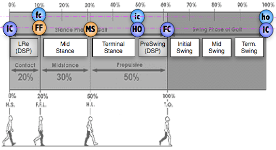

Estimations with inertial sensors
Simurtools Toolbox™ include tools analyze IMUs signals for motion monitoring purposes.
Contents
Special DSP tools
Tools to help in some specific tasks of DSP. They are an addition to the DSP Toolbox of matlab.
- buscamaximos: seeks all the maxims of a signal
- buscamaximosth: search for all maxima that exceed a threshold
- cumcamsimp: numerical integration of cavalieri-simpson
- datacrop: interactive tool to cut a signal
IMU calibration methods
Different methods for obtaining the calibration matrix for reorienting the initial position of an IMU.
- calibra_mounting: rotational method based on accelerometers, magnetic and triad.
- calibra_anatomical: calibration based on accelerometers for vertical axis.
- calibra_ejez: DEPRECATED. Use calibra_mounting instead.
Estimate distance from acceleration signals
Double integral variations to integrate an acceleration and obtain a displacement.
More info: Accelerometry-Based Distance Estimation for Ambulatory Human Motion Analysis, Alvarez J., Alvarez D., Lopez A., Sensors n.18, 4441, 10.3390/s18124441. (2018)
- dinteg_cms: direct doble cumsum method (CMS method)
- dinteg_lri: lineal resetting mechanism (LRI method)
- dinteg_msi: an integration with mean subtraction (MSI method)
- dinteg_ofi: the optimally filtered integration (OFI method)
- dinteg_ddi: de-drifted integration (DDI method)
- doble_cumsum_zijlstra: integration with Zijsltra method
Estimate 2D orientations from gyro and magnetic sensor signals
2D orientations that can be estimated with gyroscopes.
- orientacioncompas: estimation of the orientation by means of the compass
- orientaciongiroscopo: estimation by direct integration of the gyroscope
- orientacionkalman: estimation using a kalman filter (gyroscope+magnetic)
Estimate 3D orientations from acc, gyro or magnetic signals
3D orientation can be estimated from complete IMU signals.
- triad: estimation of 3D orientation by means of accelerometers and gyroscopes
Gait Events Detection
Different functions related to step events. The names of the phases and events that characterize a normal walking cycle are summarised in the following figure:

The 5 main events that occur in a step cycle, referring to the foot that initiates the support (reference foot or ipsilatera), are:
- IC: Initial Contact (Heel Strike, Heel Contact, Foot Contact): instant of the first contact of the foot with the ground.
- FF: Foot Flat: instant in which the entire sole of the reference foot rests on the ground (plantar grade).
- MS: Mid Stance: occurs when the foot opposite the reference foot (contralateral), when swinging, overtakes the reference foot or support.
- HO: Heel Off (Foot Off, Heel Rise, Push Off): instant in which the heel of the reference foot leaves the ground.
- FC: Final Contact (Toe Off, Terminal Contact): instant in which the contralateral foot leaves the floor, normally with the toes.
In the library there are a number of functions to detect these events from inertial signals. In each case, the correspondence between the signal and the actual anatomical event is extracted from the specialized literature. A more detailed description of the anatomical step event can be found in "Observational Gait Analysis", 4ª ed. 2004, D.J. Perry, Rancho Los Amigos National Rehabilitation Center.
- eventosRT: detection of step events sequentially or in real time
- eventosCOGrecto: Canonical step event detection, normal walking in a straight line
Estimate Gait Variables: step length
Different functions related to step variables.
- distancia_arco: estimation of the pitch length using the arc model
- distancia_pendulo: estimation of the length of the step by means of an inverted pendulum
- distancia_penduloparcial: estimation of step length by means of pendulum+displacement model
- distancia_raizcuarta: estimation of the step length by means of the acceleration amplitude